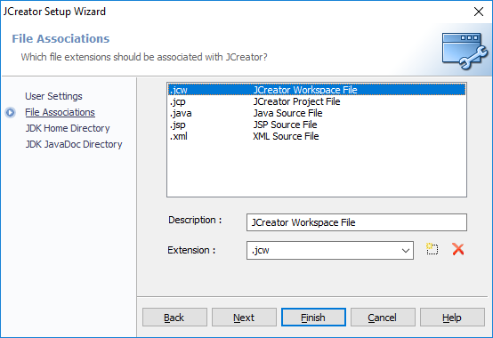
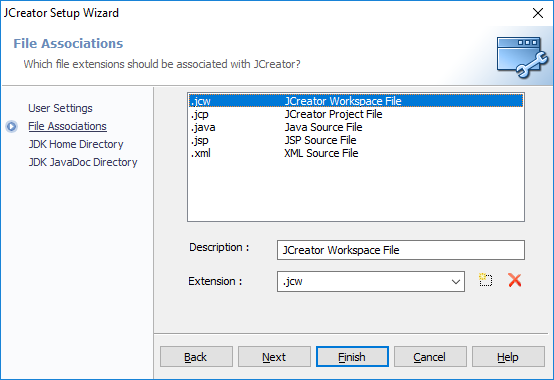

JCreator is a light
IDE, which stands for
Integrated
Development
Environment. Because Java doesn't have an IDLE or a shell like Python
does when installed, we will use JCreator when developing applications.
Click here to download the install/setup executable. The teachers distribute
this one at the start of the year.
The installation of JCreator is as simple as the installation of Java. Verify everything as usual and follow the cues in the images shown.
JCreator should boot immediately after finishing the installation. On boot, it will ask for more configurations relating to the way you want Java to work in the editor. Follow any cues in the images.
 


Making a Java file isn't as simple as Python. When you make a Java file, you actually need to make a project, which contains packages and source files to run your Java code. It's complicated to explain, but thankfully you don't need to worry about it for the most part. Just follow the steps shown below.
Once the window opens, disable and/or close the tips window that pops up (not important)
and navigate to:
File >> New >> Project...
Additionally, you can just hit
Ctrl + Shift + N to open a new project.


When you finish making your project, you should have a new editor open, with a template
waiting for you :). You can study the code for a bit, but you're going to
want to run it.
It's much easier than you think. Just
click the Run button at the top of the window and see the code run. Additionally,
you can just hit
F5. The output is at the bottom of the editor, in the General Output
window.